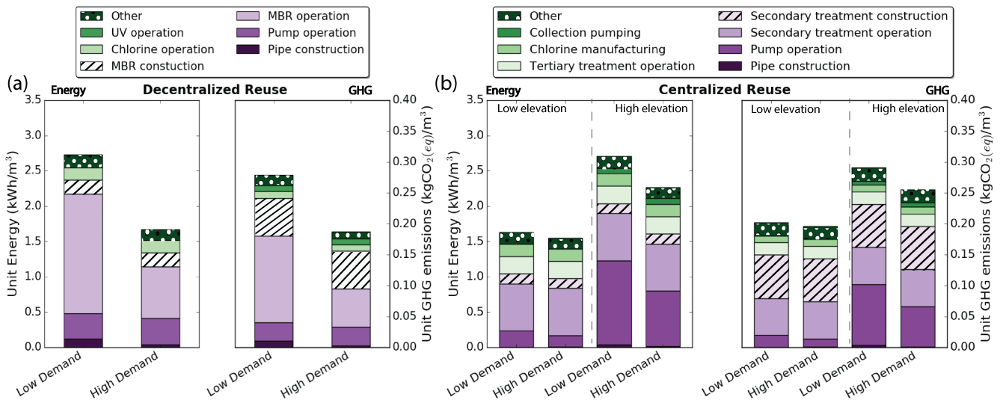

Non-Potable Water Reuse in San Francisco
A modeling framework for decentralization
Water Reuse in context
Water reuse refers to the action of treating the wastewater to an acceptable standard in order to be reused in other applications. Water reuse has been rapidly increasing in popularity especially in drought prone locations such as California. Early adopters have already been thinking of enhancing their water portfolio by incorporating water reuse in their water mix. Water reuse has been identified as an efficient way of adding resiliency to the water infrastructure and providing solutions to alleviate some of the impacts of drought. Non-potable reuse (NPR) involves using recycled water for uses that do not require high quality water such as toilet flushing, irrigation, and other similar uses. This can help mitigate some of the treatment requirements but requires the construction and installation of a separate distribution system for the water to be reused.

The process of reusing the water involves specialized planning as the generated wastewater needs to be collected, treated and re-distributed to the points of demand. This process requires energy and emits greenhouse gases (GHG). Another important consideration is the effect of scale. Larger systems benefit from the "economies of scale", as the treatment process takes place in large facilities that are generally more efficient. The tradeoff here is that larger scale systems require more infrastructure and potentially more pumping for the water distribution as they are generally located further away from the point of demand. This tradeoff is of major importance when thinking of implementing water reuse systems and should be assessed in detail. The spatial parameters of an area along with water demands and population density can be significant contributors in identifying the best way to implement water reuse. Spatial analysis along with a life-cycle assessment (LCA) of the required infrastructure is of major importance to identify the right way to promote water resiliency with the minimal environmental impacts.

But what system scale should we be thinking about given certain spatial parameters?
As described above the tradeoff between different scales of NPR is the conveyance distribution requirements versus the efficiency in the treatment mechanism. We wish to assess NPR applications using San Francisco as a case study and evaluate different levels of decentralization. The goal is to understand the effect of the spatial parameters and identify the threshold where the conveyance requirements outweigh the benefits of economies of scale identified in the treatment process. This work utilizes a life-cycle assessment methodology as a framework for assessing the energy use and GHG emissions of residential water reuse.
To create a functionally equivalent comparison, the study compares decentralized systems implemented over a range of different scales with centralized water reuse, for different spatial conditions (e.g. topography and population density). Our assessment includes the lifecycle impacts associated with the construction, operation and maintenance of NPR pipes (including excavation and backfilling for average trench depths for the selected pipe diameter), storage tanks, treatment facilities and pumps for sewage collection and NPR distribution, and production and transportation of materials. The framework described here can be used as a planning support tool to include the energy and GHG impacts when integrating decentralized infrastructure for water reuse into an urban setting with existing centralized sewerage and wastewater infrastructure.
The figure below shows the contribution of each component on the total energy and GHG emissions for the decentralized and centralized scenario for a representative area of San Francisco as estimated by our analysis.

{kind=link}
{kind=link}
Modeling Process
To appropriately model the specific case study of San Francisco, we divided the city into small grid cells (500 m x 500 m) and in each one we evaluated the performance of a decentralized water reuse system in different scales with the centralized water reuse alternative. In each grid cell we accounted for the location specific topography and population density. The number of people served refers to the number of people that their wastewater is used to generate reused water. We accounted for the wastewater generation and reused water demand separately as the NPR water can only serve approximately 50% of the total residential demand. To provide a realistic comparison we modeled different treatment systems for the decentralized approach and the centralized approach. For the decentralized approach an MBR system is used with certain pretreatment and disinfection and for the centralized treatment we assumed the existing secondary treatment of San Francisco coupled with tertiary treatment for NPR including reverse osmosis due to saltwater intrusion in the sewer system.
The decentralized distribution system was modeled based on average city block sizes and specific population density to estimate the required piping infrastructure and pumping needs for each system scale. The centralized distribution was a bit more complex as we modeled it based on the existing street network and calculating the piping infrastructure based on the shortest path (Dijkstra's algorithm) between each grid cell and the closest centralized wastewater treatment plant. The pumping needs were estimated based on the overall elevation difference between the grid cell and the treatment plant accounting for the elevation head, velocity head, consumption pressure and head losses. The route elevation was also taken into account when estimating the connecting path between grid cell and treatment plant to identify the route with the minimum piping and pumping requirements.
Specifically, for the centralized water reuse scenario, we modeled two extreme piping distribution scenarios to cover the range of approaches of NPR implementation, the "completely connected" scenario and the "completely dispersed" scenario. The "completely connected" scenario refers to the case where San Francisco implements a NPR network throughout the entire city and each grid cell is only allocated the amount of piping that it is responsible for given the number of grid cells each pipe segment serves. The "completely dispersed" scenario is a more unrealistic case where each grid cell is connected to the centralized plant by a single pipe that serves that and only grid cell. In this case, the allocation of embodied energy and GHG emissions for pipe manufacture, construction, and maintenance was much larger for each grid cell, giving the upper bound of the analysis.
The figure below visualizes the results of the analysis. In each grid cell we can identify the minimum system scale where decentralized reuse becomes a more efficient option than centralized reuse. This means that if a system of that scale or larger were to be implemented in that area, a decentralized treatment can be implemented with less environmental impacts than sending reuse water from the centralized plant. At that minimum scale and over the impact of water conveyance outweighs the "economies of scale" and a small decentralized plant can be more efficient overall. To interpret the results in a decision support framework, if a development were to be implemented in a specific area of the city with a certain size, the map shows whether it is more environmentally beneficial for it to implement its own wastewater treatment for reuse of just connect to the centralized treatment plant. Alternatively, from a centralized planning perspective, you can think of it as identifying areas where a centralized distribution system would be beneficial to exist.
{kind=link}
{kind=link}
Discussion
Water infrastructure is spatially sensitive. Especially when considering water reuse most of the decisions are based on the redistribution of the water to the points of demand as usually the wastewater treatment plants are located downhill and in the outskirts of the cities. Optimal solutions might vary depending on location, scale, number of facilities and topography. Although small systems suffer in treatment efficiency per unit of water treated, they are benefiting from being closer to the point of use and avoiding the large conveyance costs. By carefully assessing the spatial conditions in which NPR exists we can identify optimal solutions that minimize the environmental impacts.
As presented in this work, system scale should be coupled with the specific spatial parameters to identify optimal system designs. Not surprisingly, even relatively small decentralized systems have lower energy and GHG footprints in some areas based on the specific topography and distance from the centralized treatment facility. More research is needed to reduce the uncertainty of the analysis as only certain treatment processes were assessed with uncertain energy intensities. Last but not least, societal impacts play an important role in the decision making process as centralized infrastructure, though perceived as more reliable and with benefits of "economies of scale", presents barriers for NPR as large scale dual-distribution systems can be costly and disruptive to implement in dense urban areas. Decentralized infrastructure allows for a flexible and incremental approach for system expansion with uncertain growth patterns and can increase the community engagement.
Relevant Work
This work refers to previous research and is extending published results. The findings and results of the original study can be found in the Environmental Science and Technology Journal under the titled publication Assessing Location and Scale of Urban Non-Potable Water Reuse Systems for Life-Cycle Energy Consumption and Greenhouse Gas Emissions. The data used here has been adjusted to model the planned treatment process for centralized NPR in San Francisco which is more complex and energy intensive than conventional NPR treatment due to saltwater intrusion in the sewer system.
The funding for this research was provided by the National Science Foundation-funded Reinventing the Nation’s Urban Water Infrastructure (ReNUWIt) Engineering Research Center. Any opinions, findings, and conclusions or recommendations expressed in this material are those of the named authors and do not necessarily reflect the views of the NSF.
Support or Contact
Do you have questions or comments? Please contact Olga Kavvada: @okavvada or email okavvada@gmail.com.